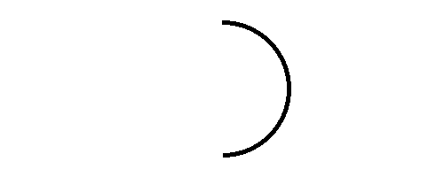

Complex Shapes
Jed Rembold
February 27, 2026
Halfway through the week!
- Scan the QR code or go to https://tools.jedrembold.prof/daily
- Fun group question: What is the best regular polygon?

Quick Announcements
- I apologize I couldn’t get through all the exam scoring before today. I’ll have things ready by Monday
- PS4 is due on Monday
- Make sure you are using the available resources as you need them!
- Myself
- Section leaders
- QUAD Center
- Project 2 is next week! PLan accordingly, especially if Project 1 did not go great
Group Problems
Problem 1: Tracing Understanding
Which of the below blocks of code will create the image to the right?
The window measures 500 x 200 pixels and the value of
d is 150.

x, y = 250 - d / 2, 100 - d / 2
a1 = GArc(x, y, d, d, 90, -180)
gw.add(a1)x, y = 250 - d, 100 - d
a1 = GArc(x, y, d, d, -180, 90)
gw.add(a1)x, y = 250 - d / 2, 100 - d / 2
a1 = GArc(x, y, d, d, 90, 180)
gw.add(a1)x, y = 250 - d / 2, 100 - d / 2
a1 = GArc(x, y, d, 180, -90)
gw.add(a1)Problem 2: An Arrowhead
- This is a coding problem, work in pairs or trios on a single computer
- In
arrow.py, I’ve drawn the initial shaft of an arrow for you (you are welcome) - Your task is to add an arrow head to the right end of the arrow, which should look as shown below:
Problem 2b: The Fletchings
- Switch who is typing!
- No arrow will fly straight without its fletchings. Now add two parallelograms on the left end of the arrow.
- Mimic the dimensions and angles as closely as possible!
Problem 2c: The Flight
- Switch who is typing!
- Up until this point, everything has just been added to the GWindow
- Change that, creating a
GCompoundand add everything to that instead - Add the
GCompoundto the left edge of the window, and animate it flying to the right - BONUS: stop the animation when the tip of the arrow hits the right side of the screen
Live Coding
Time It!
- Suppose we wanted to make a stopwatch
- Let’s aim for a narrow diamond for the hand
- Circle around outside, with red arc between 12 and 2 to indicate “almost done”
- Hand initially points towards current mouse position
- When we click, it instead starts animating, rotating towards 12, where it stops